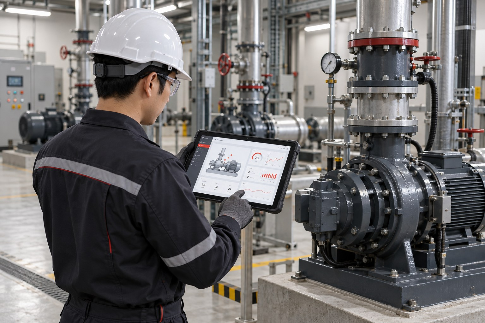
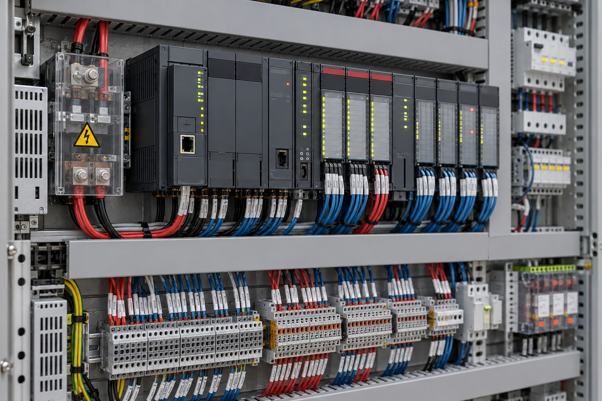
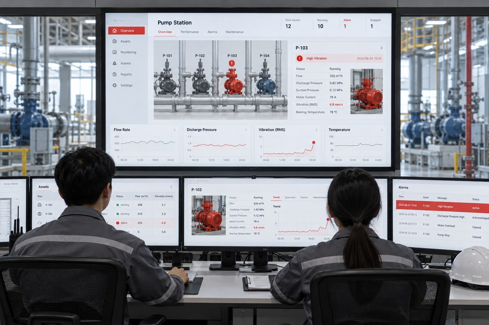
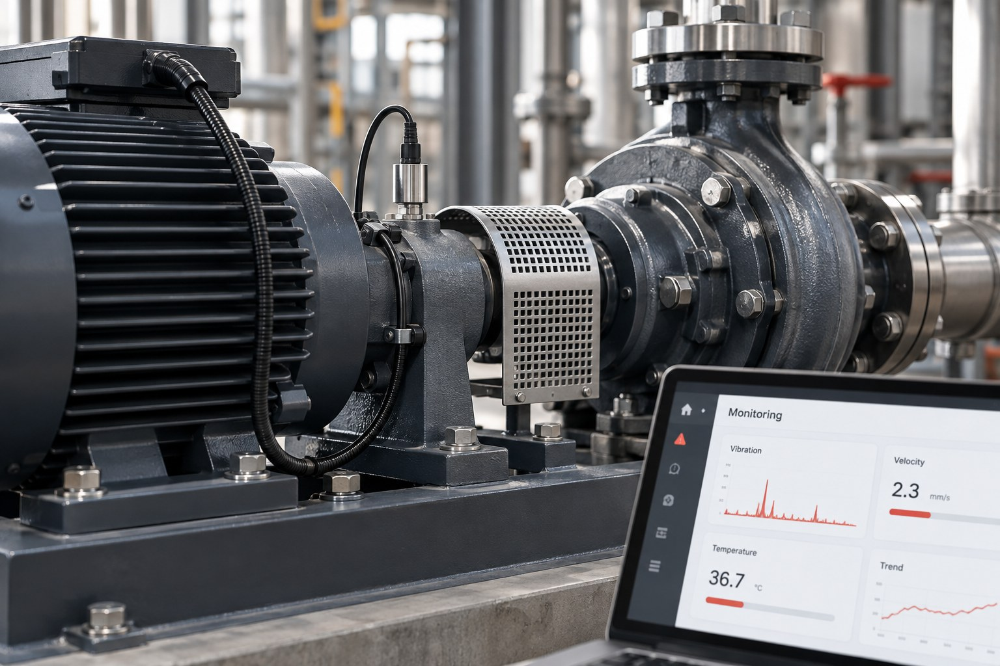
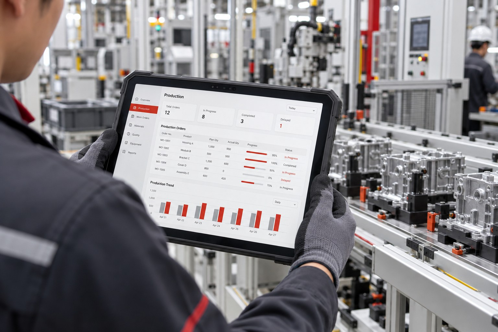
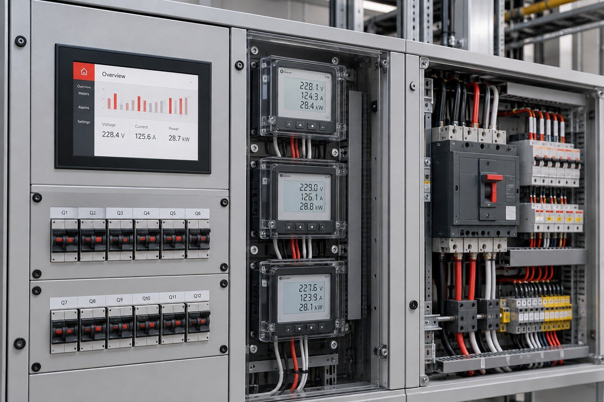
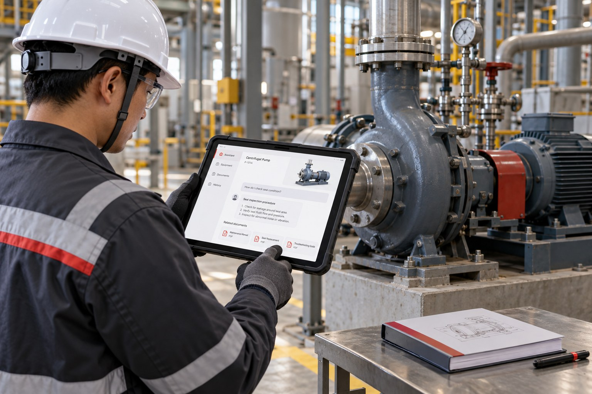
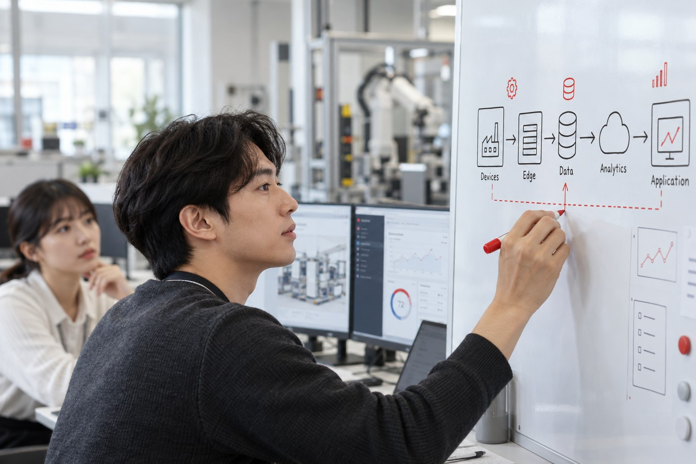

서버에 쌓이기만 합니다
데이터는 들어오는데 보는 화면도, 받는 알람도 없습니다. 쌓인 데이터가 결정으로 이어지지 않습니다.
FROM DATA TO IT SOLUTIONS
현장 서버에 쌓인 데이터부터 대시보드 · 시스템 연동 · AI 같은 IT 솔루션까지.
노빠꾸컴퍼니는 서버 뒤에서 끝까지 만듭니다.

설비 모니터링 대시보드OUR ROLE
현장의 설비 · 제어반 · 게이트웨이는 운전 데이터를 서버까지 보냅니다. 노빠꾸컴퍼니는 그 서버 뒤에서 데이터를 정리하고, 현장이 실제로 쓰는 IT 솔루션과 AI로 만듭니다.
현장 · OT
NOBBAKKU COMPANY · 서버 뒤(IT)

FIELD 현장 장비 · 제어 시스템 (고객사 · 설비 업체)
NOBBAKKU COMPANY 서버 뒤 데이터 · IT
어떤 장비, 어떤 방식이든 서버에 닿은 데이터부터 받습니다. 경계에서 필요한 데이터 형식과 API는 고객사 · 설비 업체와 함께 정합니다.
WHY
설비 데이터를 모으는 것까지는 많은 현장이 해냈습니다. 막히는 곳은 그다음입니다.
데이터는 들어오는데 보는 화면도, 받는 알람도 없습니다. 쌓인 데이터가 결정으로 이어지지 않습니다.
설비 데이터, MES, ERP, 엑셀이 따로 있어서 같은 질문에 숫자가 다르게 나옵니다.
그럴듯한 시연은 만들었지만 실제 운영 환경에 붙이지 못하고, 만든 사람이 떠나면 아무도 고치지 못합니다.
노빠꾸컴퍼니는 서버 뒤의 데이터부터 현장이 쓰는 화면과 AI까지, 한 팀이 끝까지 만듭니다.
진행 방식 보기 →SERVICES
필요한 레이어만 맡겨도 되고, 처음부터 끝까지 맡겨도 됩니다.
서버와 API로 들어온 데이터를 끊기지 않게 받아, 믿고 쓸 수 있는 형태로 정리합니다. 모든 솔루션의 바닥입니다.
정리된 데이터를 현장과 관리자가 매일 쓰는 화면과 시스템으로 만듭니다. 웹 · 모바일 어디서든 봅니다.
쌓인 운전 데이터로 이상을 먼저 알아채고, 다음 행동을 제안하는 AI를 올립니다. 데모로 끝내지 않고 운영까지 갑니다.
SOLUTIONS
업종보다 문제가 먼저입니다. 설비 데이터로 가장 많이 푸는 여섯 가지입니다.

모니터링여러 현장의 설비 운전 상태와 이력을 실시간 대시보드로 보고, 기준을 벗어나면 바로 알람을 받습니다.
시계열 DB · 웹 대시보드 · 알람

예지보전모터 · 펌프의 온도 · 전류 · 진동 이력을 학습해, 평소와 다른 신호를 먼저 잡아 계획 정비로 바꿉니다.
이상 탐지 · 예측 모델 · MLOps

시스템 연동가동 시간, 정지 사유, 전력량을 생산 · 보전 시스템에 자동으로 넣어 수기 입력을 없앱니다.
REST API · 데이터 매핑 · 배치

에너지설비별 전력량을 운전 조건과 함께 분석해, 낭비 구간을 찾고 최적 운전 조건을 제안합니다.
전력 분석 · 최적화 · 리포트
선박 · 플랜트 · 데이터센터 설비를 구조도 위에 띄워, 현장에 가지 않고 상태를 확인합니다.
원격 관제 · 2D/3D 뷰어 · 권한 관리

AI 비서운전 이력과 매뉴얼을 연결해, "이 펌프 지난달에 왜 멈췄지?"에 출처와 함께 답하고 보고서를 씁니다.
LLM · RAG · 출처 표시
※ 적용 시나리오 예시입니다. 실제 범위는 데이터 진단 후 정합니다.
PROCESS
기간은 예시이며, 범위와 데이터 상태에 따라 달라집니다.
HOW TO START
STEP A
약 2주
지금 가진 데이터로 무엇을 할 수 있는지, 무엇부터 해야 하는지 정리합니다.
진단서 · 우선순위 · 로드맵
STEP B
약 4~6주
효과가 가장 큰 문제 하나를 작게 만들어, 효과를 숫자로 확인합니다.
동작하는 시제품 · 효과 측정
STEP C
프로젝트 · 월 단위
PoC에서 확인한 것을 운영 시스템으로 키우고, 함께 운영합니다.
운영 시스템 · 인수인계 문서 · 운영 지원
TECH STACK
특정 도구를 고집하지 않습니다. 고객의 환경과 예산에 맞춰 고르고, 왜 골랐는지 문서로 남깁니다.
MQTTREST APIWebSocketKafkaAirflow
PostgreSQLTimescaleDBInfluxDB데이터 레이크dbt
웹 대시보드PWA 앱GrafanaMES · ERP 연동
이상 탐지시계열 예측LLM · RAGPyTorchMLflow
클라우드사내 서버DockerKubernetes모니터링
THE NOBBAKKU SPIRIT
시작한 프로젝트는 운영에 올라갈 때까지 멈추지 않습니다.
넘어진 기록도 로그로 남겨 다음 버전의 재료로 씁니다.
되돌리지 않습니다. 고쳐서 앞으로 배포합니다.
코드 · 문서 · 운영 방법까지 넘깁니다. 우리가 없어도 돌아가야 끝입니다.
ABOUT
현장에서 데이터를 모으는 일은 점점 쉬워지고 있습니다. 어려운 건 그 데이터를 매일 쓰는 화면과 시스템, 그리고 믿을 수 있는 AI로 만드는 일입니다. 노빠꾸컴퍼니는 그 서버 뒤의 일을 맡습니다.
막히면 돌아가는 대신 뚫고 나갑니다. 실패는 끝이 아니라 다음 버전을 위한 데이터일 뿐입니다. 그래서 우리에게 개발의 실패는 없습니다.

FAQ
설비 · 제어반 · 데이터 전송까지는 고객사나 설비 업체가 맡고, 서버 뒤의 데이터 플랫폼 · IT 솔루션 · AI는 노빠꾸컴퍼니가 맡습니다. 경계에서 필요한 데이터 형식과 API는 함께 정합니다.
서버나 데이터베이스에 쌓이는 데이터라면 대부분 연결합니다. MQTT, OPC UA, REST API, 데이터베이스, 파일 등 어떤 방식으로 받을지는 데이터 진단에서 정합니다.
네. 대부분 그 상태에서 시작합니다. 데이터 진단에서 무엇이 있고 무엇이 빠졌는지부터 정리합니다.
네. 클라우드, 사내 서버(온프레미스), 둘을 섞은 구성 모두 가능합니다. 보안 정책과 예산에 맞춰 정합니다.
데이터는 고객이 정한 환경 안에 둡니다. 접근 권한을 나누고 통신과 저장 구간을 암호화합니다. 외부 AI 서비스를 쓸 때는 어떤 데이터가 나가는지 먼저 합의합니다.
함께 운영하거나, 코드 · 문서 · 운영 방법을 넘겨 드려 고객 팀이 직접 운영하게 합니다. 어느 쪽이든 우리가 없어도 돌아가야 끝입니다.
쌓아 둔 데이터든, 만들고 싶은 화면과 AI든 지금 상태 그대로 이야기해 주세요.